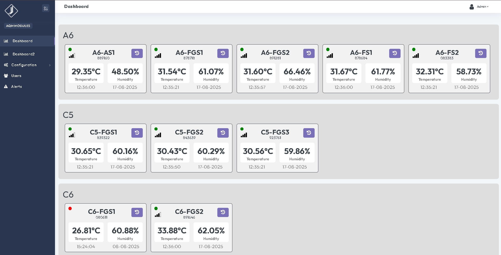

E-Paper Air Quality Monitoring Devices
Custom e-paper display systems for real-time environmental monitoring, featuring temperature, humidity, and CO2 sensors with 4G connectivity and cloud data integration for industrial air quality assessment.


Project Overview
This comprehensive IoT project involved designing and developing customized e-paper driven Air Quality Monitoring (AQM) devices for industrial clients. The project required creating two distinct device variants with different sensor configurations, implementing real-time data visualization, 4G connectivity, and cloud-based monitoring systems for 41 deployed units across multiple locations.
In response to growing concerns about air quality in industrial environments, this system provides real-time monitoring of critical air quality parameters with data transmitted to cloud servers for centralized analysis and visualization. E-Paper display technology ensures readability in all lighting conditions while minimising power consumption.
Technologies Used
Key Components & Features
E-Paper Display Technology
Custom-designed low-power e-paper displays providing clear, readable environmental data with excellent visibility in various lighting conditions and ultra-low power consumption.
Multi-Sensor Integration
Two device variants: basic model with temperature & humidity sensors, and advanced model with additional CO2 level monitoring for comprehensive air quality assessment.
4G Connectivity Module
Integrated 4G communication enabling real-time data transmission to cloud platforms with signal strength monitoring and automatic reconnection capabilities.
Arduino-Based Control
Programmed using Arduino IDE with custom display rendering, sensor data processing, and communication protocols for reliable operation in industrial environments.
Cloud Dashboard Integration
Real-time monitoring dashboard displaying data from all 41 deployed devices with historical tracking, alerts, and device status management capabilities.
Device Configuration System
Unique ID assignment and configuration management for individual device identification and centralized monitoring across multiple installation sites.
Key Metrics
Technical Implementation
Display Programming
Custom graphics and text rendering using Arduino IDE, including shape drawing, font sizing, and pixel-perfect layouts optimised for e-paper display characteristics and readability in all ambient lighting conditions.
Sensor Data Processing
Real-time environmental data collection from temperature, humidity, and CO2 sensors with data validation, filtering, and formatting for display and transmission to cloud endpoints.
4G Communication
Implementation of AT command protocols for cellular communication, including signal strength monitoring (AT+CSQ), data transmission to cloud URLs, and connection reliability management with auto-reconnect logic.
Troubleshooting & Optimization
Resolved hardware connectivity issues through SIM port cleaning and maintenance, fixed IMEI reset problems through code logic redesign, and improved signal reading accuracy through enhanced error handling.
Air Quality Parameters
- PM2.5 (Fine Particulate Matter): Particles ≤2.5μm that penetrate deep into lungs — critical health indicator
- PM10 (Coarse Particulate Matter): Larger particles ≤10μm affecting the respiratory system
- CO2 (Carbon Dioxide): Indoor air quality indicator, ventilation effectiveness metric
- Temperature: Comfort and process monitoring with ±0.3°C accuracy
- Relative Humidity: Moisture levels affecting health and equipment with ±3% accuracy
- VOCs (Volatile Organic Compounds): Chemical vapors from industrial processes and materials
Challenges & Solutions
Display Compatibility
Overcame font sizing and pixel format compatibility issues by selecting appropriate libraries and display parameters specific to the e-paper technology used.
Signal Strength Reliability
Resolved intermittent signal reading issues through hardware maintenance, SIM port cleaning, and improved AT command implementation for consistent 4G connectivity.
IMEI Reset Issue
Fixed automatic IMEI number reset problem by redesigning communication functions with enhanced logic and comprehensive error handling mechanisms.
Project Outcomes
- Device Deployment: 41 AQM devices manufactured and deployed across multiple industrial sites with units tested and operational
- Real-time Monitoring: Continuous environmental data collection and cloud-based dashboard monitoring for all deployed devices
- Custom Solutions: Two distinct device variants meeting specific customer requirements for different monitoring applications
- System Reliability: Robust 4G connectivity with signal strength monitoring and automatic data transmission capabilities
- Early Detection: Identification of process improvements reducing particulate emissions at specific facilities
- Enhanced Safety: Quantifiable reduction in air quality-related health complaints and improved worker confidence